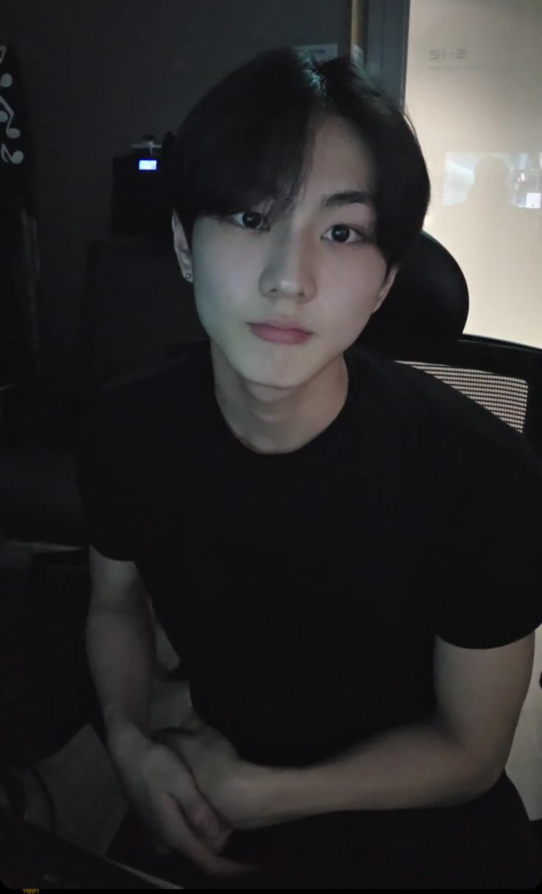
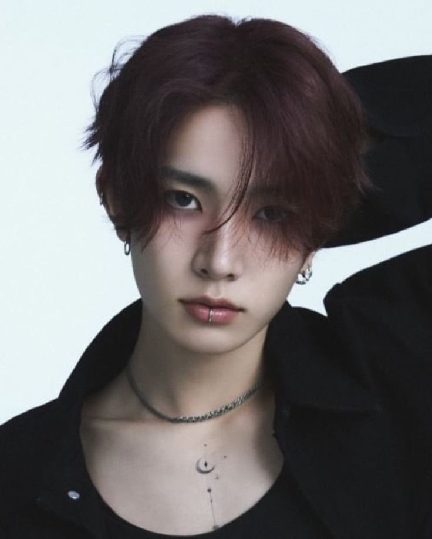
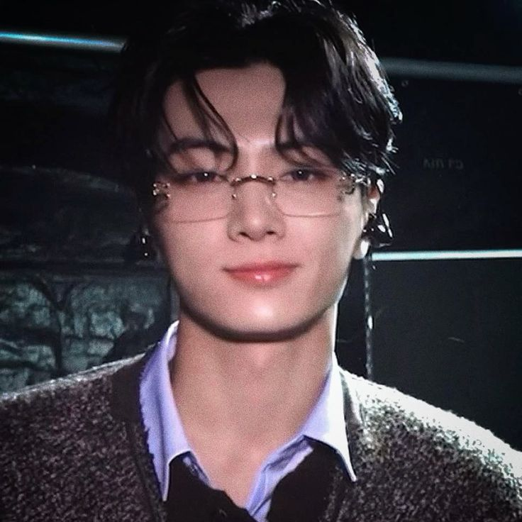
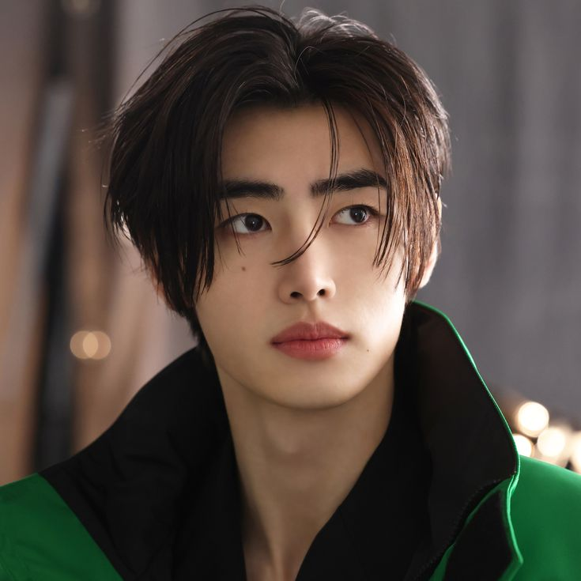
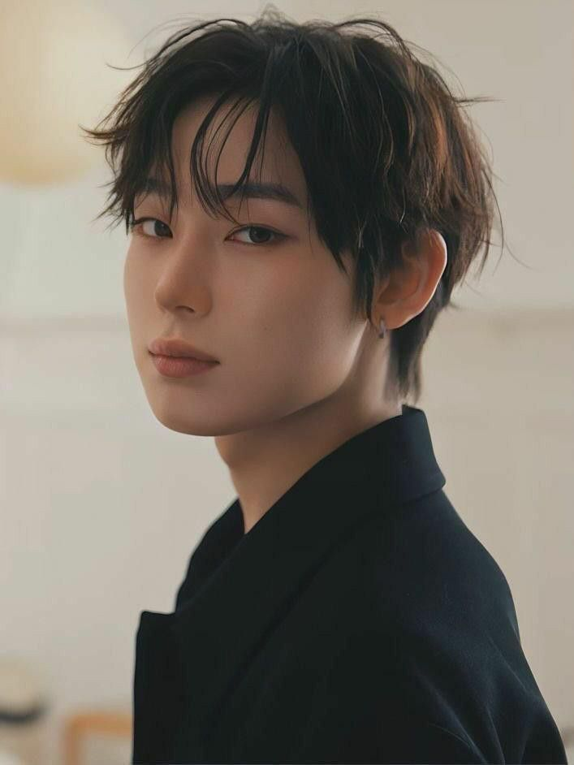
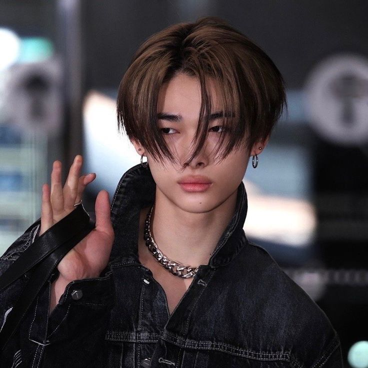

Op deze pagina vind je alle (vorige) leden van ENHYPEN met hun foto’s en korte beschrijvingen.

Yang Jungwon (geboren op 9 februari 2004) is de leider van ENHYPEN. Hij werd bekend door het survivalprogramma I-LAND. Jungwon staat bekend om zijn stabiele zang, sterke dansvaardigheden en zijn zorgzame, verantwoordelijke leiderschap binnen de groep.

Lee Heeseung (geboren op 15 oktober 2001) is het oudste lid van ENHYPEN. Heeseung staat bekend om zijn krachtige zang, sterke podiumuitstraling en zijn allround talent in zingen, dansen en performance. Helaas heeft hij de groep verlaten op 10/03/2026. Wil je er meer over te weten komen? Ja? klik hier!

Park Jongseong (geboren op 20 april 2002), beter bekend als Jay. Jay staat bekend om zijn krachtige performance, charisma op het podium en zijn open, humorvolle persoonlijkheid.
Jake Sim (geboren op 15 november 2002), vaak gewoon Jake genoemd, is een lid van ENHYPEN. Hij staat bekend om zijn energieke performance, charmante persoonlijkheid, sterke dansvaardigheden en zijn leuke, eigenwijze karakter.

Park Sunghoon (geboren op 8 december 2002) is een lid van ENHYPEN. Hij staat bekend om zijn sterke dansskills, charismatische aanwezigheid op het podium en zijn vriendelijke, rustige persoonlijkheid.

Kim Sunoo (geboren op 24 juni 2003) is een lid van ENHYPEN. Hij staat bekend om zijn vrolijke energie, creatieve ideeën, sterke podiumaanwezigheid en het vermogen om altijd een positieve sfeer binnen de groep te brengen.

Nishimura Riki, een Japanse zanger, danser en songwriter, vooral bekend als lid van de Zuid-Koreaanse boyband Enhypen. Binnen de groep onderscheidt hij zich door zijn dansvaardigheden, energieke podiumprésence en creatieve bijdragen aan choreografieën.